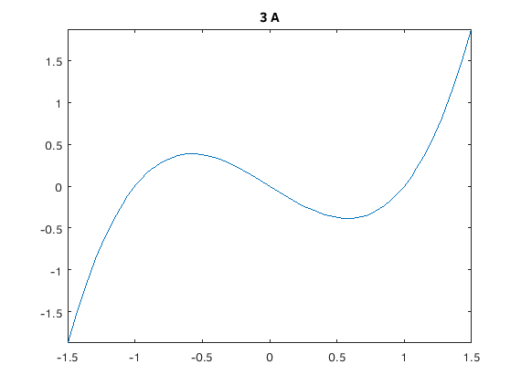
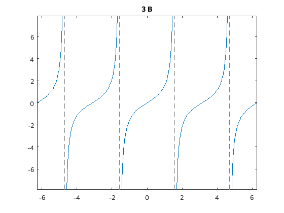
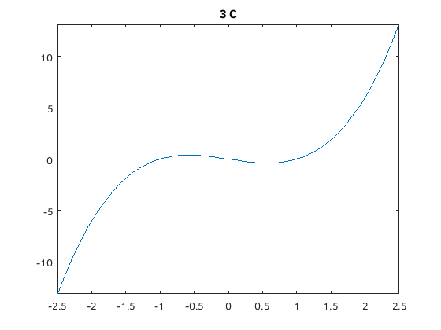
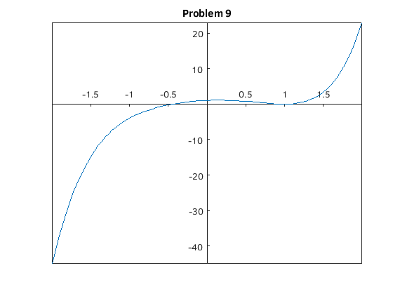
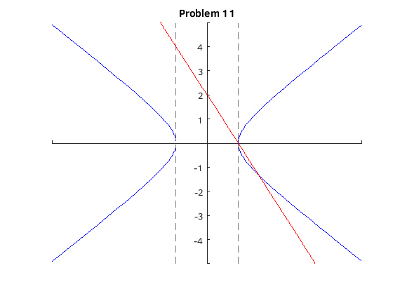

Problem Set A
Joseph Michael Martinsen
Math 308-510
Michael Pilant
Contents
Problem 1
% a) A1 = 413/(768+295); fprintf('a)\n\t %.2f\n\n',A1) % b) fprintf('b)\n\t%.2e\n',2^(123)) fprintf('\t%.0f\n\n',2^(123)) % c) fprintf('c)\n\t%1.34f\n',pi^2) fprintf('\t%1.34f\n\n',exp(1)) % d) val = [61/88 13863/20000 253/365]; ln2 = log(2); small = val(1); temp = ln2 + val(1); fprintf('d)\n') for i = 1:3 fprintf('\t%f\n',val(i)) if abs(val(i) - ln2) < temp small = val(i); end end fprintf('\tBest approx = %f\n\n',small)
a) 0.39 b) 1.06e+37 10633823966279326983230456482242756608 c) 9.8696044010893579923049401259049773 2.7182818284590455348848081484902650 d) 0.693182 0.693150 0.693151 Best approx = 0.693151
Problem 2
a = 1; prob = ['a', 'b', 'c']; for i = 1:3 val = sin(a/(10^i))/(a/10^i); fprintf('%s)\n\t %.15f\n',prob(i),val) end
a) 0.998334166468282 b) 0.999983333416666 c) 0.999999833333342
Problem 3
% a fplot(@(x) x.^3-x,[-1.5 1.5]) title('3 A') figure % b fplot(@(x) tan(x),[-2*pi 2*pi]) title('3 B') figure % c fplot(@(x) x.^3-x,[-2.5 2.5]) title('3 C')  
Problem 9
figure fplot(@(x) x.^5 - 3*x.^2 + x + 1,[-2 2]) syms x solve(x^5 - 3*x^2 + x + 1 == 0,x) title('Problem 9') ax = gca; ax.XAxisLocation = 'origin'; ax.YAxisLocation = 'origin';
ans =
1
1
root(z^3 + 2*z^2 + 3*z + 1, z, 1)
root(z^3 + 2*z^2 + 3*z + 1, z, 2)
root(z^3 + 2*z^2 + 3*z + 1, z, 3)

Problem 11
syms x y e1 = x^2 - y^2 == 1; e2 = 2*x+y == 2; sol = solve([e1, e2], [x,y]); fprintf('(%.2f, %.2f) and (%.2f, %.2f)\n',sol.x(1),sol.y(1),sol.x(2),sol.y(2)) figure axis([-5 5 -5 5]) hold on fplot(@(x) sqrt(x.^2-1),'b') fplot(@(x) -sqrt(x.^2-1),'b') fplot(@(x) -2*x +2,'r') title('Problem 11') ax = gca; ax.XAxisLocation = 'origin'; ax.YAxisLocation = 'origin';
(1.00, 0.00) and (1.67, -1.33)